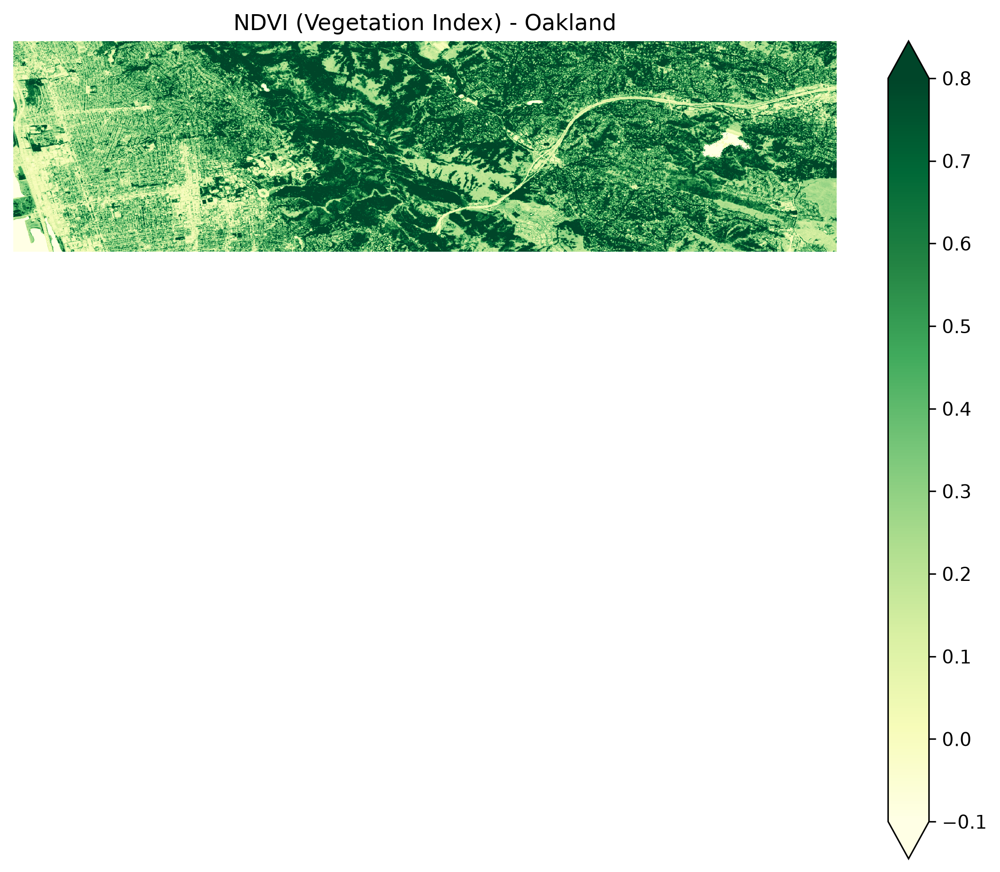
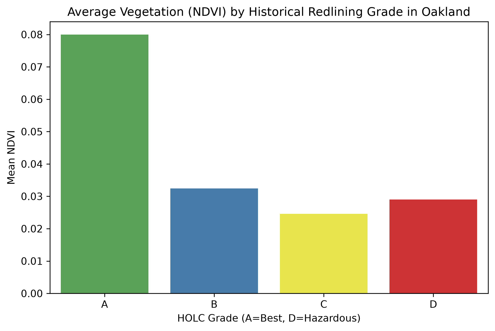

In this article, we will be covering how historical racial discrimination and redlining has led to modern inequalities in access to vegetation for the inhabitants of Oakland, California, as well as how our understanding of it impacts what we know about racism as a whole in the United States.
In Science, Schell et al. (2020) demonstrate how 20th-century housing policies—specifically redlining and classist zoning practices—shaped modern urban ecological patterns. These historical socioeconomic decisions created lasting structural inequities in canopy cover, microclimates, and biodiversity across urban communities. Analyzing these historical drivers is essential for understanding present-day environmental disparities and informing equitable urban planning and conservation strategies moving forward.
To quantify local environmental disparities, we retrieved Sentinel-2 satellite imagery via the Earth Search STAC catalog and calculated the Normalized Difference Vegetation Index (NDVI). By leveraging the contrast between near-infrared (NIR) and red light reflectance bands, we mapped the spatial distribution of urban tree canopy across Oakland, California. This spatial framework provides a quantitative baseline to evaluate the broader ecological and public health implications for Oakland residents.
Figure 2 in the Schell paper shows how NDVI (Normalized Difference Vegetation Index) tracks historical redlining.

Next, we performed a spatial overlay by combining the raster-derived NDVI layer with the Home Owners' Loan Corporation (HOLC) redlining polygon vector data to compute zonal statistics. Aggregating vegetation metrics across historical HOLC security zones allows us to quantify mean canopy cover per neighborhood across Oakland. This computational approach establishes a direct link between historical housing classifications and present-day ecological metrics.

The resulting zonal statistics reveal a clear disparity in urban canopy cover across Oakland's historical HOLC security zones. Neighborhoods designated as Grade C ("Definitely Declining") and Grade D ("Hazardous") consistently exhibit significantly lower mean NDVI values relative to Grade A and B zones.
These spatial patterns align directly with the structural framework outlined by Schell et al. (2020), demonstrating how historical housing discrimination exerts a lingering legacy effect on urban ecosystems. Because discriminatory policies systematically restricted capital investment in marginalized communities, their ecological impacts—such as diminished vegetation cover, heightened microclimate temperatures, and reduced ecosystem services—persist long after formal policy repeal. Quantifying these spatial inequities provides the empirical foundation necessary to evaluate environmental justice initiatives and guide targeted, equitable urban planning interventions.